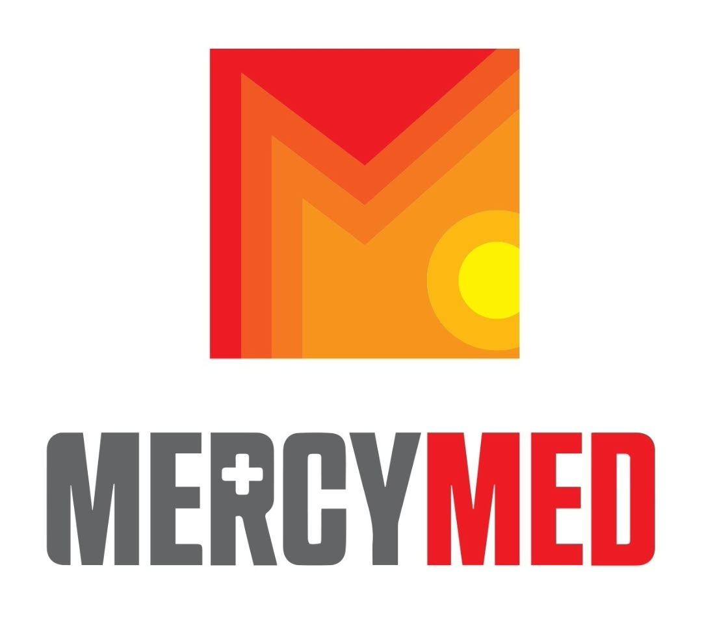
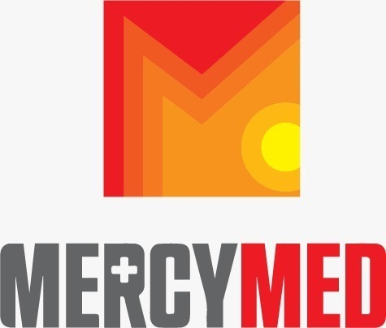

evidence-based medicine
Clear recommendations grounded in modern medical knowledge.
Private medical centre · Bishkek
Modern medical knowledge, international experience and a human approach — all in one place.
Draft hero message awaiting client confirmation

Clear recommendations grounded in modern medical knowledge.
Adult and pediatric care with specialists who coordinate.
Charitable mobile clinics are at the heart of MercyMed.
01 / About MercyMed
MercyMed is a private outpatient medical centre in Bishkek, providing high-quality care based on modern medical knowledge and international experience.
Our story began with mobile clinics serving communities in different regions for over 10 years. The Bishkek clinic opened in October 2023.

Mobile clinics · the heart of MercyMedCharitable clinics have brought medical support to communities across different regions.
An outpatient centre for families, local residents and international visitors.
02 / What we do
From daily consultations to preventive check-ups, our team helps you understand what comes next.
Consultations and reports in Kyrgyz, Russian, English, Chinese, German and French. Adult and pediatric care in one centre.
Request a consultation ↗Growth and development, vision screening, EKG, anemia and diabetes screening, and laboratory tests.
Ultrasound, EKG, vision testing, audiometry and birth preparation courses by a certified doula.
Laboratory and certificate wording awaiting client confirmation.
We offer consultations and reports in six languages. Website translations are available in English, Russian and Kyrgyz.
03 / The people behind the care
Experienced specialists and a shared belief that good medicine starts with listening.
Director / Doula
Supporting families from preparation to care.Chief Doctor / Pediatrics
Care for children and their families.Pediatrics / Family Medicine
Whole-family care across every stage.Internal Medicine / Pulmonology
Thoughtful care for lasting health.Pediatric / Intensivist
Calm, attentive pediatric expertise.Pediatrics
Helping young patients feel at ease.Pediatrics / Oncology
International experience, close to home.Physical Therapist
Supporting movement and recovery.Gynecology
Respectful care for women's health.Ultrasound
Clear imaging for confident next steps.MercyMed team profiles.
Request an appointment04 / For organisations
MercyMed works with schools, companies, embassies and medical education partners.
Talk to our teamYearly medical check-ups designed for your organisation.
Special deals for students and partner communities.
Training for doctors and medical students.
05 / Your next step
Send us a request and our team can help you choose a consultation.
06 / Contact
MercyMed medical centre
Tunguch microdistrict, near Ayu Grand
Approximate location · details awaiting client confirmation